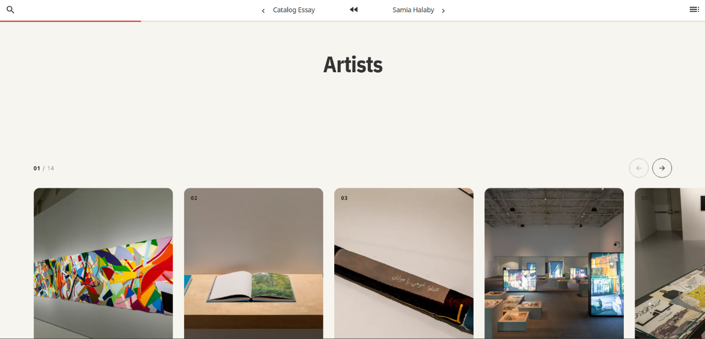
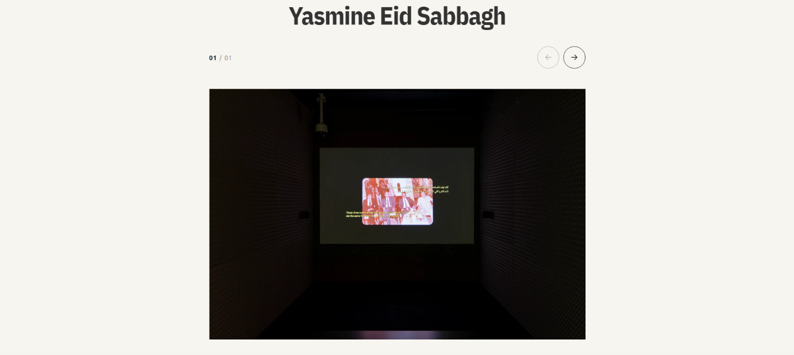
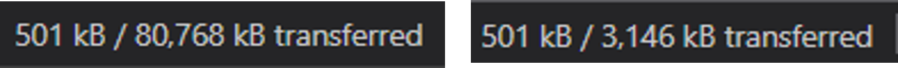
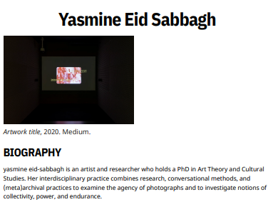
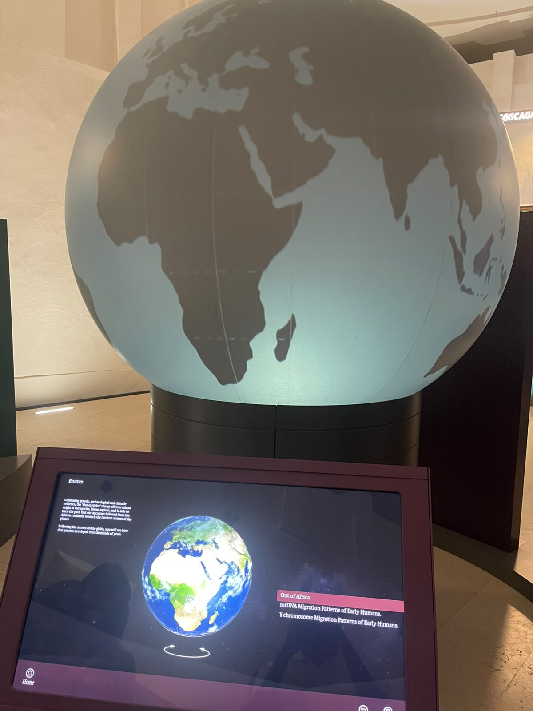
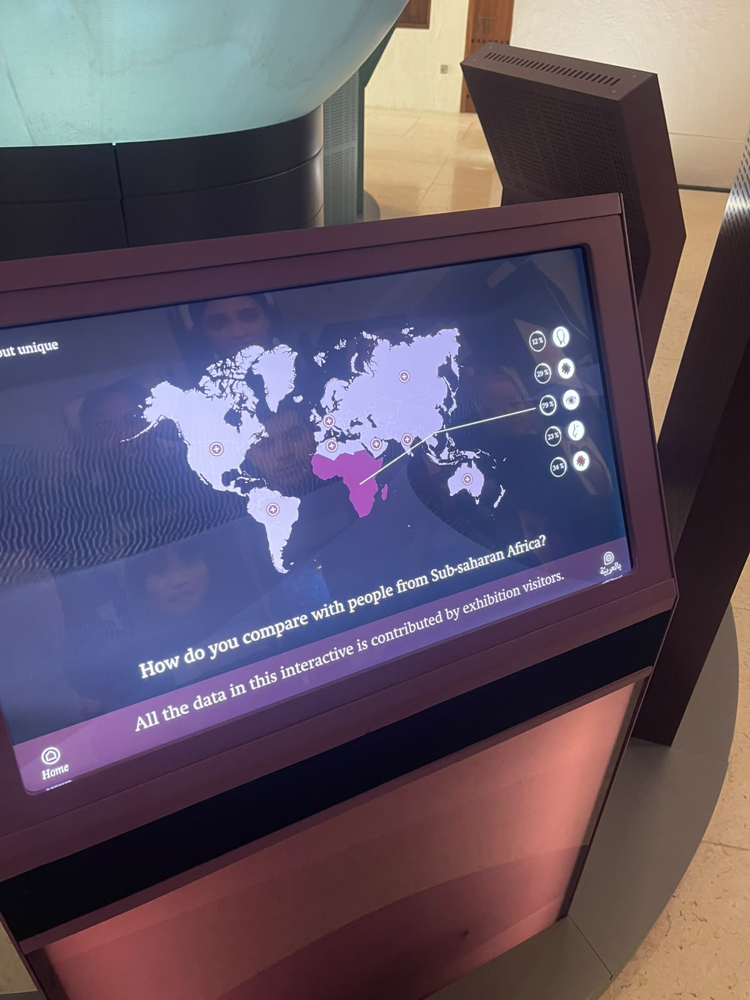
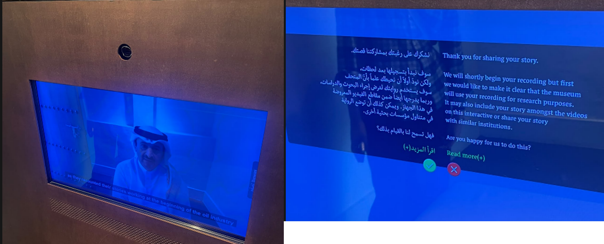

This week, I worked on the Getty publication tool to build the Mathaf publication. I wanted to change the layout and add new features. I started by reorganizing the artist content and redesigning the artist pages. Following the structure we already agreed on, I built the website around it. However, I didn’t think listing all 14 artist names on the side menu was user-friendly, so I created an overview artist page instead, giving users the option to choose which artist they are interested in and check their page. For each artist page, I centered the name, followed by an artwork slider and then their biography.

For the slider, users can view one artwork at a time with arrows and a progress bar, with support for dragging, swiping, or using keyboard arrows. The user also has the option to zoom in on the artwork by clicking the picture to see the details clearly, thanks to the high-resolution images.

The biggest headache of the week was checking the website's performance and trying to fix the heavy loading times. When I tested the site using Lighthouse and the browser's Network panel, I realized the Artists page was loading around 80 MB of full-size camera photos at once, which caused the page to stutter while scrolling. To fix this, I wrote a script that generates smaller versions of every photo in different sizes while keeping the original high-res files untouched for the zoom viewer. This dropped the Artists page size from 80 MB down to about 3 MB and cut the main image load time from over 33 seconds down to 3 seconds. This issue made me realize that you don’t always need to use the highest-resolution pictures or the heaviest animations, sometimes an efficient solution that prioritizes performance is much better.

I spent time cleaning up the PDF version of the publication. At first, the PDF download link wasn't working, images weren't showing up, and hidden icons were creating random blank pages. I also had to format the PDF layout differently for the slider, unlike the web version, you can't scroll on paper, so I instead displayed the artworks cleanly underneath the artist page.

One of the technologies that caught my eye was the interactive earth projection. The physical earth object that tracks what you do on the touchscreen, meaning if you select a certain continent or region, the earth object moves along with it.

Another exhibit that was quite interesting lets you select the region you are from, and then ask for your physical features, such as your head shape, eye color, skin color, hair color, and nose shape. After entering your traits, it calculates and displays a percentage showing how common those features are for people in your selected region.

Another interesting thing I found was a recording booth featuring a camera where visitors can share their personal stories about the oil industry if they participated or contributed to it. Before the recording starts, the screen asks you to read and agree to a prompt stating that your video and story will be used for research and archival purposes.
